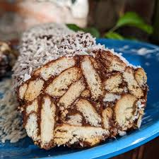

Lazy Cake, the pseudo cake everyone loves!
Description:
A no-bake dessert that's as easy as it is delicious.
This indulgent treat combines layers of chocolate, biscuit, and creamy goodness to create a dessert everyone will
love.

Ingredients
- 200 g digestive biscuits (or any other biscuits of choice)
- 100 g cocoa powder
- 200 g butter
- 200 g condensed milk
- 100 g sugar
- 1 tsp vanilla extract (optional)
Steps
- Break the digestive biscuits into small pieces (you can crush them by hand or use a rolling pin).
- In a saucepan, melt the butter over medium heat, then add sugar, cocoa powder, and condensed milk. Stir
continuously to combine.
- Once the mixture is well combined and smooth, remove from the heat and stir in vanilla extract (if using).
- Pour the chocolate mixture over the crushed biscuits and stir until well coated.
- Transfer the biscuit-chocolate mixture into a lined baking tin and press it down firmly to compact the
mixture.
- Chill in the refrigerator for at least 2 hours or until it has set firmly.
- Once chilled, cut into squares and serve!
Enjoy you meal!
Home